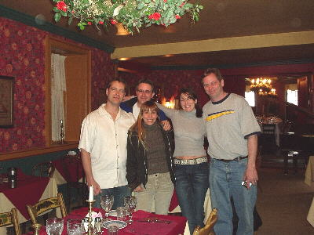

|
Gode
Cookery on the Food Network
 Goode
Cookys, the molded Springerle
sold through the Gode Cookery website, were also briefly featured in the episode "The
Secret Life of Cookies."
The
series premiered on June 7th, 2004, and consisted of 13 episodes. "The Secret Life of Sandwiches"
debuted on Monday, June 21st, at 10 PM EDT.
Taping
took place on March 24th at the Century Inn in Scenery Hill, PA. The
Century Inn has been in constant operation since 1794. Its website is
at: http://www.centuryinn.com/
Susan Fox-Davis, a member of the Gode Cookery Discussion Group, is featured in the episode, "The Secret Life of Pies". Taping took place at her parent's residence in Los Angeles on April 9th. Her webpage featuring photos from the taping is at Susan's Kitchen. After the 2004 taping, we heard from both Stanley Brown, Associate Producer, and Kerry Lambert, Series Producer of "The Secret Life of...": Stanley said: You may be interested to know that The
Food Network had a note about our show about sandwiches: "we loved it!"
Thanks for helping make it work! We ship it to them May 26. Look for early-mid June broadcast. Sincerely, Stanley Brown Associate Producer "The Secret Life of..." Digital Reality/Greystone TV And Kerry wrote: I just saw your website
which has the production stills on it! Thanks so much for including us!
FYI- the show time has moved to Monday night- so the debut of the show, The Secret Life of Barbecue, will start June 7. I believe the show time is 8pm - but I am not positive yet. It may be up on the Food Network's website. Sandwiches, featuring trenchers, will be the 3rd show up... Hope you're well, Kerry Lambert How
about a recipe?
For "The Secret Life of Sandwiches", we used a manchet bread made from a recipe created by Lisa Holcomb-Blair. Lisa is a member of the Gode Cookery catering staff, and joins us each year in Alabama for the Renaissance Faire. Here is the original 17th c. receipt, followed by Lisa's redaction. The
making of a fine Manchet:
Take
halfe a bushel of fine flower twise bolted, and a gallon of faire luke
warm water, almost a handful of white salt, and almost a pinte of
yeast, then temper all these together, without any more liquid as hard
as you can handle it: Then let it lie half an hower, then take it up
and make your Manchetts, and let them stande almost an hower in the
oven. Memorandum, that everie bushel of meale may be five and twenty
caste of bread and everie loafe to way a pound beside the chesill.
Beebe, Ruth Anne. Sallets,
Humbles, & Shrewsbery Cakes. A Collection of Elizabethan Recipes
Adapted for the Modern Kitchen. Boston: David R. Godine, 1976: p. 63
A Recipe for good white bread:
Making a yeast or a leavener:
Take a cup of good flour and put
in a bowl with 1 cup of luke warm water. Add 1 tsp. of instant yeast
and allow this to stand covered for 3 hours.
After the yeast has proofed, mix
with 2 cups of good flour. Add remaining water, salt, sugar, and yeast.
Mix well and knead into stiff dough. Let it rest of an hour. Punch down
and shape into a round loaf. Let it rest until it doubles and brush
surface with the egg white. Place the loaf in a pre-heated 375° F
oven and bake until golden brown; approximately 45 minutes. Allow loaf
to cool for at least one hour before serving. Makes 1 loaf.
Jim & Tammy before the start of the taping. Jim making the "not-a-trencher." Jim with series producer Kerry Lambert. Jim getting in make-up. Jim & Tammy do a "silly pose" with show host Jim O'Connor.  Show host Jim O'Connor, on far left, with the taping & production crew. The cast & crew, from left to right: Darell McCormick of Gode Cookery, Glenda Cockrum of Gode Cookery, show host Jim O'Connor, sound technician Thomas, series producer Kerry Lambert, assistant producer Lynne, Jim Matterer, Troy Lamey of Gode Cookery, & Tammy Crawford. The Food Network logo done in medieval gingerbread, by Tammy Crawford. |